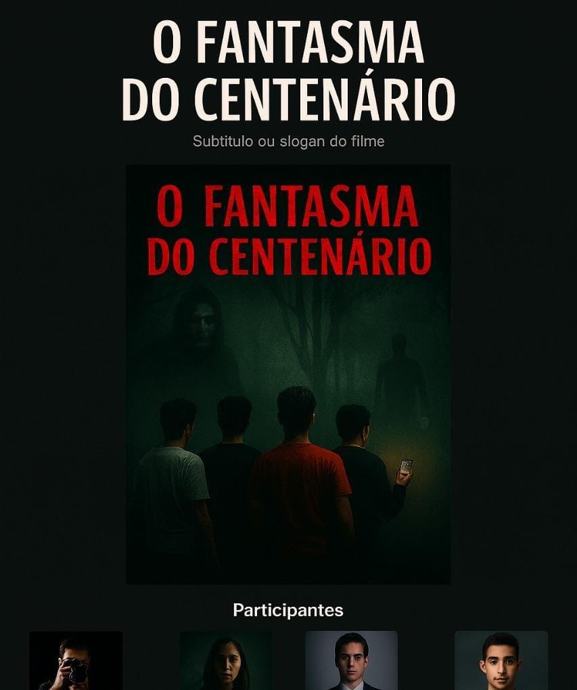
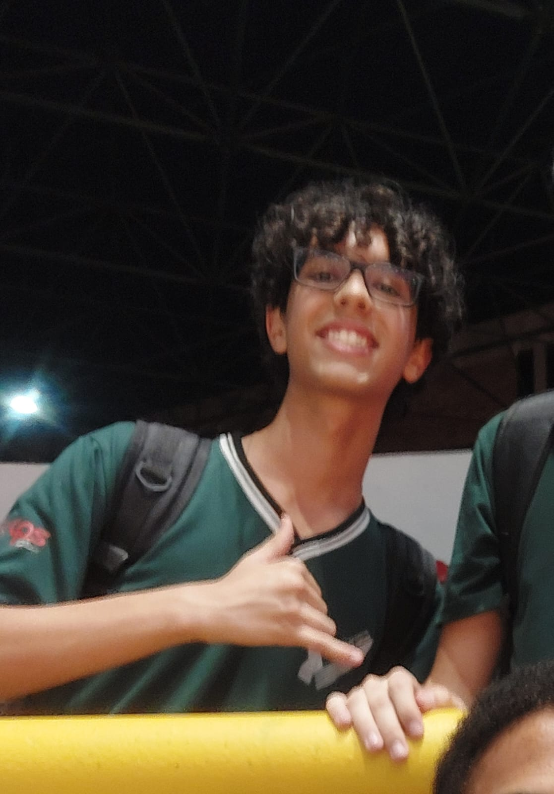
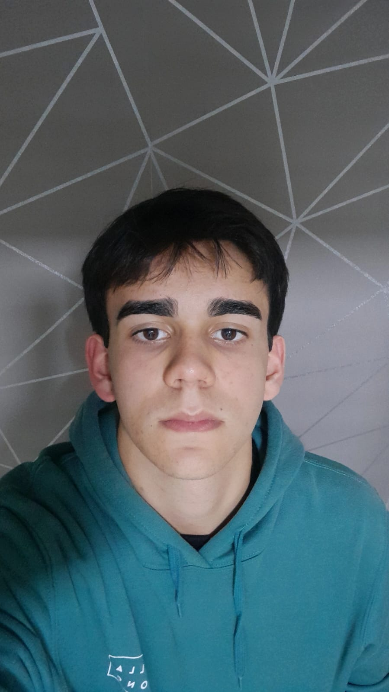
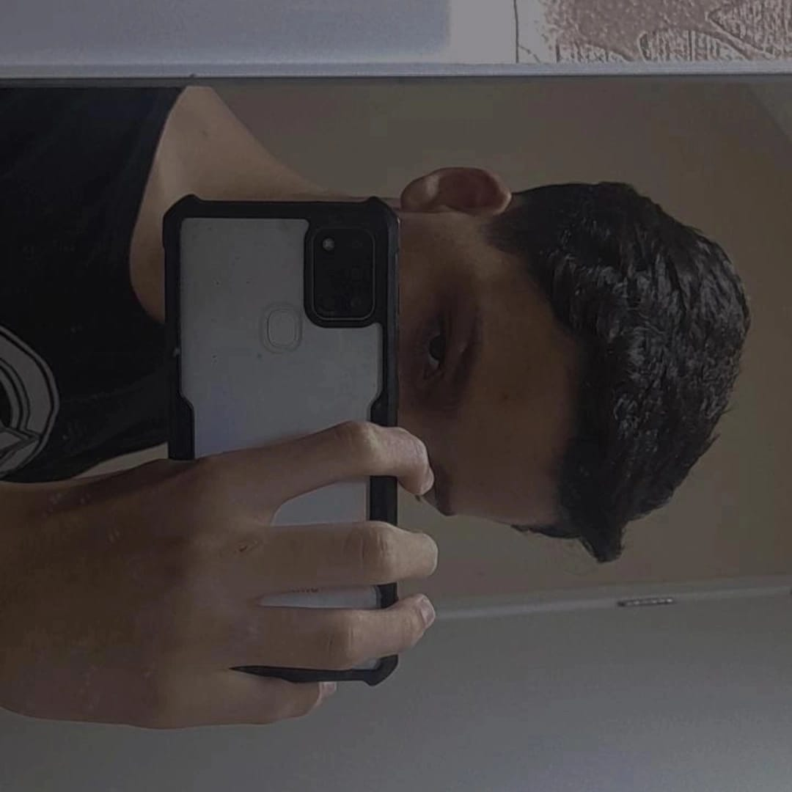
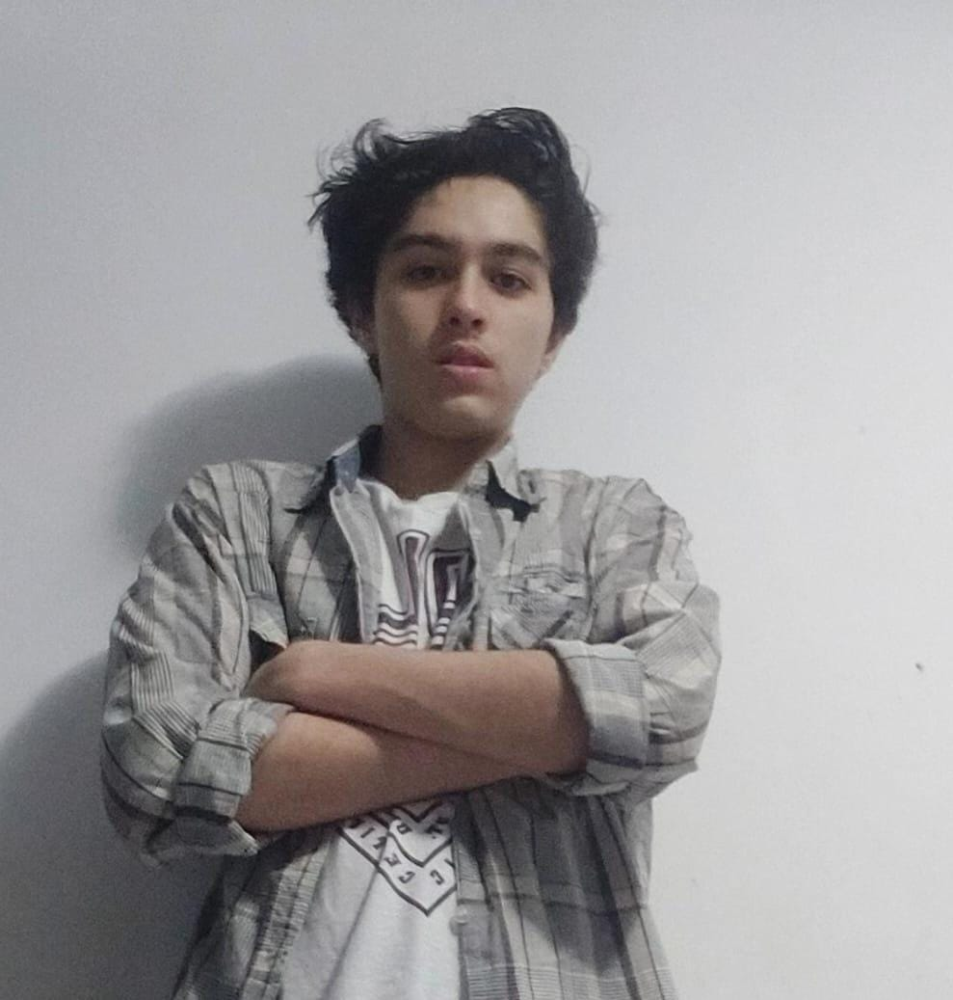

O fantasma do Centenário
1º EET-ETEC PRESIDENTE VARGAS
Cartaz

Participantes

João Paulo
João Paulo como João

Bernardo Cunda
Roteirista e diretor
João Marcos
João Marcos como Marcos

Caique
Caique Como Caique e figurinista

Guilherme
Guilherme como Guilherme
Enzo
Enzo como (Enzo)Professor De Física e fantasma
Matheus de almeida
Montagem edição e camera
bryan
editor
Assista ao curta
Disponível no link do botão:
Clique no botão para assistir o curta
Assistir agora